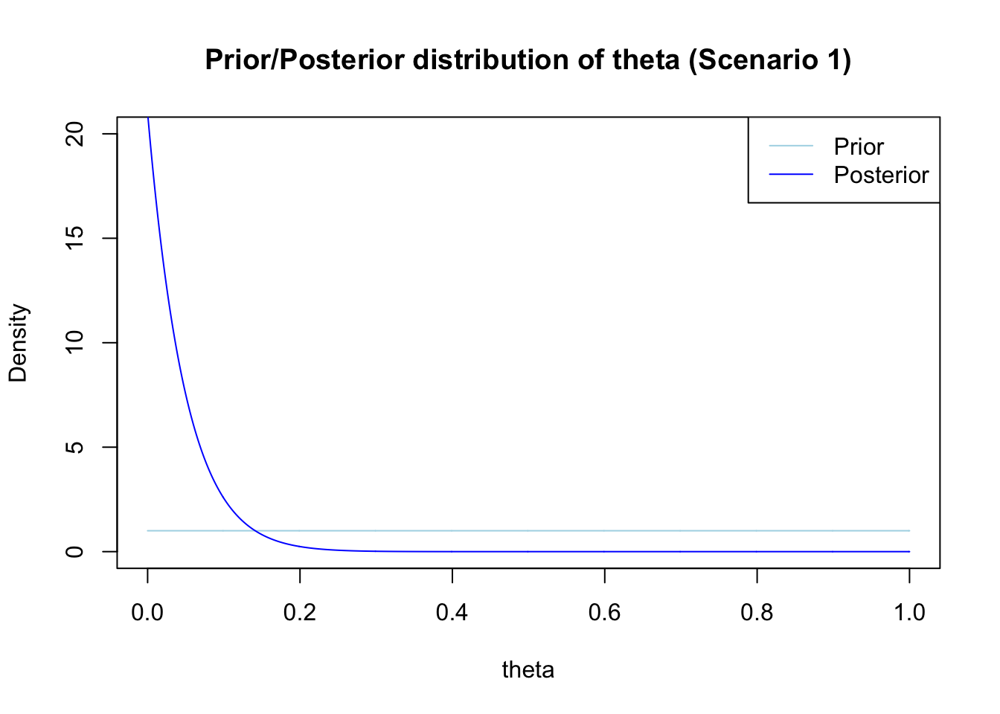

3 Conjugate analysis
3.1 Exercise 1: Rare disease - Posterior inference for the Binomial model
Suppose we are interested in the prevalence \(\theta\) of a rare disease \(\theta \in \Theta = [0,1]\). n people were checked for infection and y is the number of infected in the sample (Y|\(\theta \sim BiNom(n,\theta))\). The prior distribution for \(\theta\) is a Beta distribution \(B(a, b)\).
- Plot the probability function of y for \(\theta\) = 0.02, 0.1, 0.2 and n = 20 (in one plot).
HINTS: The probability mass function of a binomial distribution with parameters size and prob is implemented in function dbinom(), see ?dbinom for details. Use type = “h” for the plot.
y <- 0:15
n <- 20
fy0.02 <- dbinom(y, size = n, prob = 0.02)
fy0.1 <- dbinom(y, size = n, prob = 0.1)
fy0.2 <- dbinom(y, size = n, prob = 0.2)
plot(y - 0.1, fy0.02, type = "h", col = "red",
xlab = "y", ylab = "pmf", ylim=c(0,0.7),
main = "Probability mass function of y|theta")
lines(y, fy0.1, type = "h", col = "blue")
lines(y + 0.1, fy0.2, type = "h", col = "green")
legend("topright", legend = c("theta = 0.02", "theta = 0.1", "theta = 0.2"),
col = c("red", "blue", "green"), lty = c(1,1,1))- Plot the prior and posterior distribution of \(\theta\) for n = 20 and y = 0. Consider two scenarios with different hyperparameters (a1 and b1 for Scenario 1, a2 and b2 for Scenario 2) for the prior distribution of \(\theta\):
a1 = b1 = 1 (i.e. \(\theta_1 \sim B(a_1, b_1)\))
a2 = 2, b2 = 20 (i.e. \(\theta_2 \sim B(a_2, b_2)\))
HINT: The beta distribution with parameters shape1 = a and shape2 = b is implemeted with functions dbeta, pbeta, qbeta and rbeta as described above.
n <- 20
y <- 0
theta <- seq(0, 1, by = 0.001)
#Prior and posterior a1=1 and b1=1
a1 <- 1
b1 <- 1
a1n <- a1 + y
b1n <- b1 + n - y
p.theta.prior1 <- dbeta(theta, shape1 = a1, shape2 = b1)
p.theta.posterior1 <- dbeta(theta, shape1 = a1n, shape2 = b1n)
plot(theta, p.theta.prior1, col = "lightblue", type = "l", xlab = "theta", ylab = "Density", ylim = c(0,n),
main = "Prior/Posterior distribution of theta (Scenario 1)")
lines(theta , p.theta.posterior1, type = "l", col = "blue")
legend("topright", legend = c("Prior", "Posterior"),
col = c("lightblue", "blue"), lty = 1)
#Prior and posterior for a2=2 and b2=20
a2 <- 2
b2 <- 20
a2n <- a2 + y
b2n <- b2 + n - y
p.theta.prior2 <- dbeta(theta, shape1 = a2, shape2 = b2)
p.theta.posterior2 <- dbeta(theta, shape1 = a2n, shape2 = b2n)
plot(theta, p.theta.prior2, col = "lightblue", type = "l", xlab = "theta", ylab = "Density", ylim = c(0,n),
main = "Prior/Posterior distribution of theta (Scenario 2)")
lines(theta , p.theta.posterior2, type = "l", col = "blue")
legend("topright", legend = c("Prior", "Posterior"),
col = c("lightblue", "blue"), lty = 1)- Compare how the hyperparameters of the prior distribution of \(\theta\) influence the posterior distribution.
- Scenario 1: Flat prior, no prior information on \(\theta\): Posterior is infinity at \(\theta=0\).
- Scenario 2: With a = 2 and b = 20, some information of prior experiments is provided. Posterior is unimodal.
- For n = 20 compute \(E(\theta|y = 0)\), mode(\(\theta\)|y = 0), sd(\(\theta\)|y = 0) and P(\(\theta\) < 0.1|y = 0) for a = b = 1 and a = 2, b = 20.
\[E(\theta|y = 0) = \frac{a_n}{a_n+b_n}\]
\[Mode(\theta|y = 0) = \frac{a_n-1}{a_n+b_n-2} \text{ for } a_n, b_n > 1 \]
\[sd(\theta|y = 0) = \sqrt{\frac{a_n b_n}{(a_n+b_n+1) (a_n+b_n)^2} }\]
n <- 20
y <- 0
# Prior1 1 (a0 = 1, b0 = 1)
a0 <- 1
b0 <- 1
# Posterior Parameters
an <- a0 + y
bn <- b0 + n - y
post.exp <- an/(an + bn) # posterior expectation
post.mode <- NA # Mode does not exist, see plot of posterior distribution
post.sd <- sqrt((an * bn)/((an + bn + 1)*(an + bn)^2)) #posterior sd
post.p <- pbeta(0.1, an, bn) # posterior probability p(theta < 0.1| Y = 0)
(data.frame(post.exp, post.mode, post.sd, post.p))## post.exp post.mode post.sd post.p
## 1 0.04545455 NA 0.04343332 0.890581# Prior 2 (a0 = 2, b0 = 20)
a0 <- 2
b0 <- 20
# Posterior Parameters
an <- a0 + y
bn <- b0 + n - y
post.exp <- an/(an + bn) # posterior expectation
post.mode <- (an - 1)/(an + bn - 2) # posterior mode
post.sd <- sqrt((an * bn)/((an + bn + 1)*(an + bn)^2)) #posterior sd
post.p <- pbeta(0.1, an, bn) # posterior probability p(theta < 0.1| Y = 0)
(data.frame(post.exp, post.mode, post.sd, post.p))## post.exp post.mode post.sd post.p
## 1 0.04761905 0.025 0.03247592 0.9260956- Compute an equally tailed and an HPD (highest posterior density) 95%-credibility interval for the parameter \(\theta\) in the second scenario and compare the length of these credibility intervals.
HINT:
Use quantiles of the beta distribution for the equal tailed intervall;
for the HPD-interval with a Beta posterior, you can use the function betaHPD
(in R package pscl)
## Classes and Methods for R developed in the
## Political Science Computational Laboratory
## Department of Political Science
## Stanford University
## Simon Jackman
## hurdle and zeroinfl functions by Achim Zeileisn <- 20
y <- 0
# Prior
a0 <- 2
b0 <- 20
# Posterior Parameters
an <- a0 + y
bn <- b0 + n - y
#Equally sized CI (Use the quantiles of the beta posterior distribution)
CI1 <- qbeta(c(0.025,0.975), shape1 = an, shape2 = bn)
CI1## [1] 0.005963118 0.128554020## [1] 0.001175534 0.111143867## [1] 0.1225909## [1] 0.10996833.2 Exercise 2: Children data - Posterior inference for the Poisson model
The file “children.RData” contains information of how many pedestrians (6-10 years old) were killed or seriously injured in an Austrian city over the time of 16 years. As the data are count data we assume that the number Y of children killed or seriously injured follows a Poisson distribution with parameter \(\lambda\): \[Y|\lambda \sim Poisson(\lambda).\] The conjugate prior for a Poisson likelihood is a Gamma distribution with hyperparameters a and b \(\mathcal{G}(a_0,b_0)\), thus use \(\lambda \sim \mathcal{G}(a_0,b_0)\)
- Load the data “children.RData” running the command below.
load("children.RData")
children <- data.frame(y = children$y, months = 1:12, year = rep(1:16, each = 12))
children[1:10,] #first 10 rows of the data## y months year
## 1 1 1 1
## 2 1 2 1
## 3 2 3 1
## 4 1 4 1
## 5 4 5 1
## 6 5 6 1
## 7 2 7 1
## 8 2 8 1
## 9 1 9 1
## 10 5 10 1- Derive the posterior distribution of \(\lambda\).
The result is again a Gamma distribution with updated parameters \(a_n = a_0 + n \bar{y}\) and \(b_n = b_0 + n\)
- Plot the prior and the posterior for hyperparameters \(a_0 = 1\) and \(b_0 = 1\).
Prior distribution: \[\mathcal{G} (1,1)\]
Posterior distribution: \[\mathcal{G}(1+n \bar{y}, 1+n)\]
HINT: The first column of the data.frame children can be extracted by data.frame[,1]. The mean of a vector can be calculated by the function mean(…). nrow(…) returns the number of rows in a data.frame.
# Prior parameters
a0 <- 1
b0 <- 1
y.mean <- mean(children[,1])
n <- nrow(children)
# posterior parameters
an <- a0 + n * y.mean
bn <- b0 +n
lam <- seq(0,4,0.001)
lambda.prior <- dgamma(lam, shape = a0, rate = b0)
lambda.posterior <- dgamma(lam, shape = an, rate = bn)
plot(lam, lambda.prior, col = "lightblue", type = "l", xlab = "lambda",
ylab = "Density", ylim = c(0,5) , main = "Prior/Posterior distribution of lambda")
lines(lam , lambda.posterior, type = "l", col = "blue")
legend("topright", legend = c("Prior", "Posterior"),
col = c("lightblue", "blue"), lty = c(1,1))- In October of the 8th year (from the 94th observation on) a legal amendment was introduced that gave the priority to pedestrians. In order to evaluate if the change of law effected the number of seriously injured or killed pedestrians one can assume that:
\[Y_i \sim P (\lambda_1) \text{ for i } \leq \text{93}\] \[Y_i \sim P (\lambda_2) \text{ for i > 94}\]
# legal amendment => ev. structural break after month 9 in year 8
struct.break <- as.numeric(row.names(children[children$months == 9 &
children$year == 8,]))
# data before legal amendment
child.before <- children[1 : struct.break,]
# data after legal amendment
child.after <- children[(struct.break+1) : nrow(children), ]If \(\lambda_1\) and \(\lambda_2\) are a priori independent
\[p(\lambda_1, \lambda_2) = p(\lambda_1)p(\lambda_2)\] they are also a posteriori independent \[p(\lambda_1, \lambda_2|\mathbf{y}) = p(\lambda_1|\mathbf{y})p(\lambda_2|\mathbf{y})\] and their posteriors \[\lambda_1 \sim \mathcal{G}(a_{1n}, b_{1n})\] \[\lambda_2 \sim \mathcal{G}(a_{2n}, b_{2n})\] Determine the parameters of the posterior distributions for \(a_1 = a_2=b_1 =b_2= 1\) and visualize the posterior distributions.
# prior before
a1 <- 1
b1 <- 1
# posterior before
y1.mean <- mean(child.before[,1])
n1 <- nrow(child.before)
a.1n <- a1 + n1 * y1.mean
b.1n <- b1 + n1
# prior after
a2 <- 1
b2 <- 1
# posterior after
y2.mean <- mean(child.after[,1])
n2 <- nrow(child.after)
a.2n <- a2 + n2 * y2.mean
b.2n <- b2 + n2
# Plot posterior
lam <- seq(0,4,0.001)
lambda.posterior1 <- dgamma(lam, shape = a.1n , rate = b.1n)
lambda.posterior2 <- dgamma(lam, shape = 1 + n2 * y2.mean, rate = 1 + n2)
plot(lam, lambda.posterior1, col = "red", type = "l", xlab = "lambda",
ylab = "Density", ylim = c(0,5) ,
main = "Posterior distribution of lambda before/after structural break")
lines(lam, lambda.posterior2, type = "l", col = "darkred")
legend("topright", legend = c("Before the structural break",
"After the structural break"),
col = c("red", "darkred"), lty = c(1,1))- What can you conclude about the effect of the legal amendment?
3.3 Exercise 3: Midge data - Normal model with known variance
For a species of midge 9 measurements on the wing length were observed with the goal to make inference on the population mean of the wing length.
The measurements are \[1.64, 1.70, 1.72,1.74,1.82,1.82, 1.82, 1.90,2.08\] A simple stochastic model for these data is that the measurements \(y_1, ..., y_n\) are iid. \(N(\mu, \sigma^2)\) with unknown population mean \(\mu\) and known variance \(\sigma^2\) = 0.13^2 = 0.0169. The goal is to perform a Bayesian analysis with a conjugate Normal prior on \(\mu\), \(\mu \sim N(m_0, M_0)\).
RECALL: When \(y_1, ..., y_n\) iid. \(N(\mu, \sigma^2)\) with a Normal prior on \(\mu\), \(\mu \sim N(m_0, M_0)\) and known \(\sigma^2\) > 0 the posterior distribution of \(\mu\) is also a Normal distribution \(N(m_n, M_n)\) with parameters \(M_n\) and \(m_n\) given as: \[M_n = (\frac{1}{M_0} + \frac{n}{\sigma^2})^{-1}.\] and \[m_n = M_n (\frac{m_0}{M_0} + \frac{n}{\sigma^2}{\bar{y}}),\] see slide 44.
- Compute the posterior mean \(m_n\) and the posterior variance \(M_n\) of \(\mu\) for \(m_0 = 0\) and \(M_0 = 10000\).
#data
y <- c(1.64, 1.70, 1.72, 1.74, 1.82, 1.82, 1.82, 1.90, 2.08)
n <- length(y)
mean.y <- mean(y)
sigma <- 0.13
# set prior parameters
M0 <- 10000
m0 <- 0
# compute posterior parameters
Mn <- (1/M0 + n/sigma^2)^-1
mn <- Mn* (m0/M0 + n/sigma^2 *mean.y)
mn## [1] 1.804444## [1] 0.001877777- Generate a vector mu.draws with 10000 draws from the posterior distribution \(N(m_n, M_n)\).
Hint: Use the function rnorm().
- Plot the kernel density estimate for the sample of the posterior and compare it with exact posterior density.
Hint: A kernel density estimate is generated by the function density() and can be plotted by plot(density(…))
3.4 Exercise 4: Midge data - Normal model, mean and variance unknown
Perform a conjugate Bayesian analysis of the midge data with a Normal model where both parameters \(\mu\) and \(\sigma^2\) are unknown.
The stochastic model for the 9 measurements is now that \(y_i\) are iid. Normal with unkown parameters \(\mu\) and \(\sigma^2\) \[y_i \text{ iid. } \sim N(\mu, \sigma^2)\] RECALL: If both parameters of the Normal distribution \(\mu\) and \(\sigma^2\) are unknown a joint prior on \(\mu\) and \(\sigma^2\) has to be specified. A conjugate prior is specified as follows: The prior on \(\mu\) conditional on \(\sigma^2\) is Normal, \[\mu|\sigma^2 \sim N(m_0, \sigma^2 M_0)\] and the (marginal) prior of \(\sigma^2\) is the inverse Gamma distribution \[\sigma^2 \sim G^{-1}(\nu_0/2, \nu_0/2 \, \sigma_0^2),\] see slide 49.
- Write a program to sample from the joint prior distribution of \(\mu\) and \(\sigma^2\) by sampling from the distributions \(p(\mu|\sigma^2)\) and \(p(\sigma^2)\)
Set the prior parameters first to \(m_0=1.9\),\(M_0=1\), \(\nu_0=1\) and \(\sigma^2_0=0.01\) and plot the draws (you might want to “zoom in” when you do the plot by setting xlim and ylim in a proper way).
HINT: Use the function rinvgamma() from the package “invgamma” to sample from the inverse Gamma distribution.
library(invgamma)
# set prior parameters
m0 <- 1.9
M0 <- 1
nu.0 <- 1
sigma2.0 <-0.01
# set number of draws
nsim <- 10000
# generate draws
sigma2.draws <- rinvgamma(nsim, nu.0/2, nu.0/2 * sigma2.0)
mu.draws <- rnorm(nsim, mean = m0, sd = sqrt(1 * sigma2.draws))
# plot
plot(mu.draws, sigma2.draws)- Write a program to sample from the posterior distribution by sampling \(\sigma^2\) from \(p(\sigma^2|\mathbf{y})\) and \(\mu\) from \(p(\mu|\sigma^2,\mathbf{y})\).
RECALL: Under the conjugate prior for \(\mu\) and \(\sigma^2\) the marginal posterior of \(\sigma^2\) is Inverse Gamma \[\sigma^2 | \textbf{y} \sim G^{-1}(\frac{\nu_n}{2}, \frac{\nu_n}{2} \sigma^2_n)\] and the conditional posterior of \(\mu\) is Normal \[\mu| \sigma^2, \textbf{y} \sim N(m_n, M_n \sigma^2)\]
Formulas for the posterior parameters \(\nu_n, \sigma^2_n, m_n, M_n\) are given on slide 51.
HOW TO PROCEED:
Create variables for the number of observations n and the data mean
Set the prior parameters
Create two empty variables sigma.draws and mu.draws
Determine the posterior parameters
Sample \(M\) values from \(p(\sigma^2|\mathbf{y})\)
Sample \(M\) values from \(p(\mu|\sigma^2,\mathbf{y})\) using the sampled values of \(\sigma^2\)
#Determine n and mean of y
y <- c(1.64, 1.70, 1.72, 1.74, 1.82, 1.82, 1.82, 1.90, 2.08)
n <- length(y)
meany <- mean(y)
# set prior parameters
m0 <- 1.9
M0 <- 1
nu.0 <- 1
sigma2.0 <- 0.01
# set number of draws
M <- 10000
# sample sigma2
nu.n <- nu.0 + n
sigma2.n <- 1/nu.n * (nu.0 * sigma2.0 + sum((y-meany)^2) +
1/(M0 + 1/n) * (meany - m0)^2)
sigma2.draws <- rinvgamma(M, nu.n/2, nu.n/2 * sigma2.n)
# sample mu
Mn <- (1/M0 + n)^(-1)
mn <- Mn * (1/M0 * m0 + n * meany)
mu.draws <- rnorm(M, mean = mn, sd = sqrt(sigma2.draws * Mn))- Plot the sampled values and compare to the prior distribution.

- Use the draws from the posterior to approximate the posterior mean and variance of the parameters \(\mu\) and \(\sigma^2\).
## [1] 1.813741## [1] 0.001885904## [1] 0.01894262## [1] 0.0001109309- Plot the approximation of the marginal posterior of the mean wing length.
Advanced task: Perform a sensitivity analysis to investigate how the results change with the prior parameters.